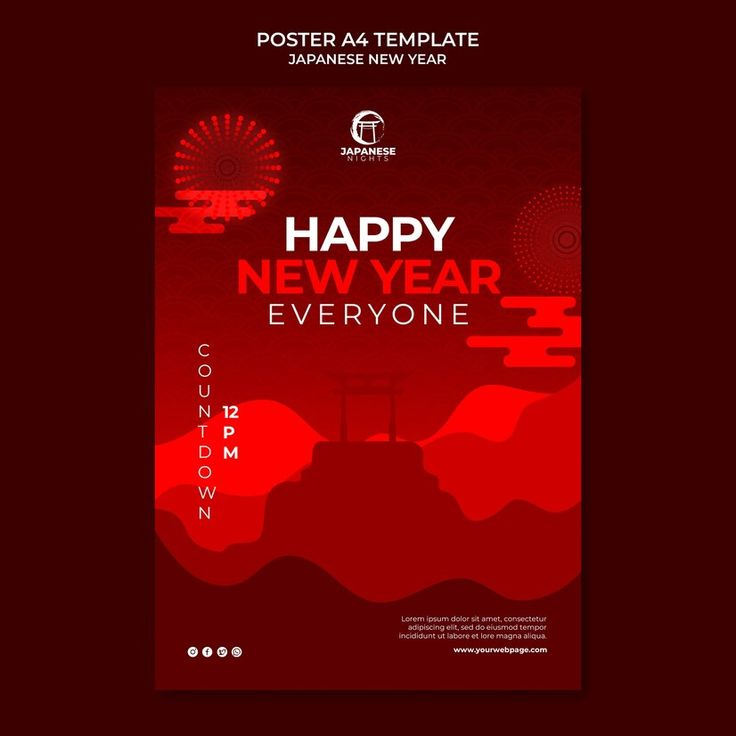

ITS JAPANESE NEWYEAR PARTY
今年もよろしくお願いします
Hatsumode
traditional visit to a shrine or temple at the beginning of the year. It's usually done during the first three days of January.
Bōnenkai
drinking party held at the end of the year, usually with friends or coworkers


What to do?
Visit a shrine
A popular tradition is to visit a shrine during the first three days of January, called Hatsumoude. This includes visiting Meiji Jingu-Mae Shrine, which is a popular choice for the first prayer of the year.
The Nakamise shopping street leading to the temple is decorated with New Year decorations and stalls offering seasonal souvenirs.
Another option is Gohyakurakanji Temple, which begins its New Year's celebrations with an annual toshikoshi soba event.
Eat traditional food
A traditional meal for New Year's Eve is toshikoshi soba, buckwheat noodles that symbolize a long life.
The long noodles are easy to cut, signifying the cutting away of misfortune for one year.
Other traditional foods include ozoni and osechi ryōri.
*kagami mochi
A traditional New Year's mochi made a few days before the holiday.
It consists of two white mochi stacked on top of each other with a daidai orange on top.
The mochi represent fortune, so stacking two on top of each other symbolizes doubling one's fortune.
Eat *zōni
A culinary tradition that began around the mid-1400s. On New Year's Eve (Omisoka, now December 31),
mochi offered to the gods and Buddha is eaten in a soup with other ingredients on the morning of New Year's Day (Gantan, now January 1).
Watch *Kohaku Uta Gassen
A musical event that is often broadcast on New Year's Eve.